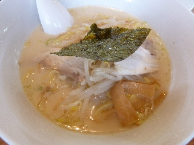
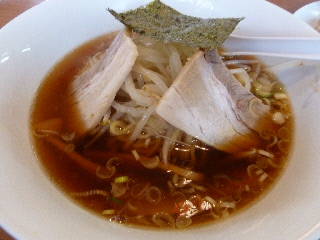
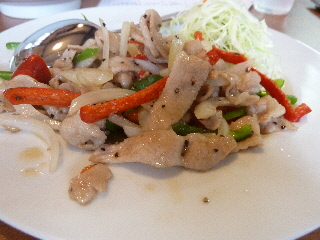
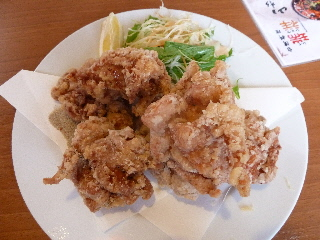

新しく出来た台湾料理のお店「瑞祥（レイショウ）」に行きました。
2012/09/02
台湾料理屋さんはオープン価格で安かったので大人気でした。

豚骨ラーメンです。
平べったくて短めの麺が、しっかり味で美味しかったです。
（通常価格580円）

醤油ラーメンはすっきりした味でした。
通常価格が480円とお得感のあるラーメンです。何回でも食べに行きたい値段ですね。

豚トロ黒胡椒炒めです。あっさりとしているんですが、お肉と野菜がよくなじんでて美味しかったです。

から揚げが出てきて「おおー」って思いました。
写真じゃわかりにくいですが、とっても大きいです。小さ目のゲンコツサイズでした。
濃い味だったので、お酒とかに合いそうでした。
また行きたいです。